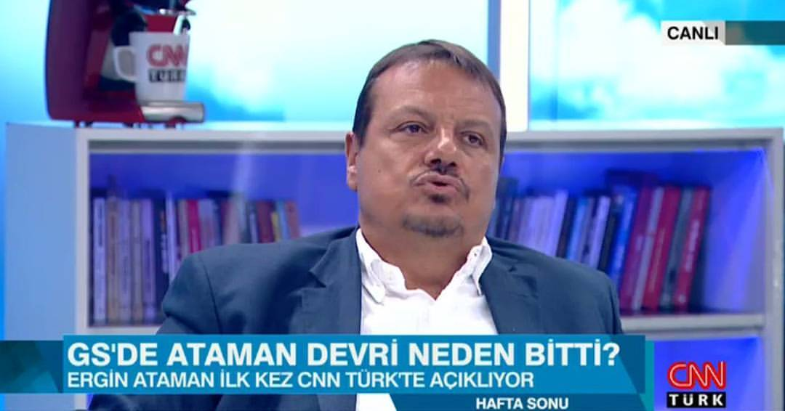

-
Ergin Ataman: "Siz de Doğuş gibi Ülker gibi bir sponsor bulacaktınız bütçeyi arttıracaktınız. Yönetim olarak kaynak yaratamadınız." pic.twitter.com/6kzp909Wii
 -
Ergin Ataman Orospu Çocuğudur Mide Bulandırır
-
Ergin Ataman: "Beni taraftar grubu ile karşı karşıya getiren Galatasaray yönetimidir. Beni yalnız bıraktılar." pic.twitter.com/JJbBTJUMwc
-
Zamanında Ergin Ataman'a sallayan sucukçu UltrAslan grubundan yine ses çıkmıyor..? Galatasaray'ın yüz karalarısınız..
-
generation(cenereyşın): nesil
#yds#UnutMadımaklımda Ergin Ataman Mutlu Pazarlar#AslındaDemekİstediğimŞu#MuratBozBilgiYarışmasında -
"Ergin Ataman" Sucuk ekmeğe GALATASARAYI SATANLAR Sizinde ALLAH belanızı versin... Ne Mutlu GALATASARAYI MENFAATSİZ SEVENLERE..!!
-
Unutursak Kalbimiz kurusun! Asil Efsane sensin be hocam Ergin Ataman ♡★★★★
-
"Ergin Ataman" Değil Belhanda Gomis.. Messi ROnaldoyuda getirsen DURSUN ÖZBK İSTİFA... Savunamadın ADAM Gibi ADAM
@erginataman -
Fena patlamış!. Ergin Ataman, Galatasaray yönetimini bombaladı! – Skor http://skor.sozcu.com.tr/2017/07/02/ergin-ataman-galatasaray-yonetimini-bombaladi-640152/ …
#gazetesozcu@gazetesozcu aracılığıyla -
Ergin Ataman, Galatasaray zarar görmesin diye her şeyi anlatmıyor. Ama bu kadarı da fazlasıyla yetiyor
-
Ergin Ataman'a istediği teklifler gelmemiş. Koç Barcelona ve Milano'nun bütçelerini beğenmedi galiba.
-
Ergin Ataman: "Taraftarın bana verdiği destek, alınan başarılardan ve kupalardan daha değerlidir benim için."
-
Fırsatı Kaçırma - pic.twitter.com/XBxXKArrrS https://bit.ly/2pH7RaU 4621 Ergin Ataman

-
Ergin Ataman aslında son 7 yılın yönetiminin içlerinin nasıl boş olduğunu açıklamış
-
Ergin Ataman: "Bazı taraftar grupları küfür ve hakaretlerle üstüme salındı. Yönetim beni taraftarla karşı karşıya getirdi. İhanete uğradım."
-
Ergin Ataman: Keşke Galatasaray, Sinan Güler'i takımda tutabilse; simge isimlerini kaybetmese - http://po.st/38aN0l
-
Ergin Ataman: "Federasyon yetkilileri Galatasaray'ı bırakıp milli takımda devam etmemi istediler. Ben teklifi geri çevirdim."
-
"Ergin Ataman" GALATASARAYDA BRÜTÜS ÇOK Bedava çalışırım diyen adamı dışlıyor...!!!
-
Her ne kadar dursun ozbek'ten nefret etsemde gecen sezonki hayal kırıklığının tek sebebi ergin ataman'dir 10M $ bütçeyi çarçur etti.
-
Çekici çağırınca asla bunu yapmayın https://youtu.be/S8VV8-p_AIU
#UnutMadımaklımda Ergin Ataman Mutlu Pazarlar#BilenKazanırMobilUygulaması -
Ergin Ataman: Real Madrid'i 20 sayıyla yenerken bir grup taraftar beni istifaya çağırdı buna rağmen arayan olmadı hep dik durmaya çalıştım.
-
Ergin Ataman: Fikret Orman bir konuda haklı. Beşiktaş'ın EuroLeague'e alınması gerekirdi - http://po.st/MupFuG
-
Ergin Ataman: Şu anda görüştüğüm ve anlaştığım bir kulüp yok. Dinleneceğim bu sezon...
-
Ergin Ataman'ın açıklamalarından sonra hala gitti diye göbek atanlar siz G.saray düşmanısınız! 2018'in Mayıs'ı da gelecek elbette ...
-
Ergin Ataman: "Benim için ciddi hayal kırıklığı oldu. Tek başımaydım, yalnız bırakıldım. Takım için sponsorlar ile bile ben görüştüm."
-
Ergin Ataman: Taraftarın bana verdiği destek, alınan başarılardan ve kupalardan daha değerlidir benim için.
-
Ergin Ataman: "Hidayet Türkoğlu benim milli takıma geçmemi istedi.Tek bir şartı vardı Galatasaray'ı bırakmam.Ben bırakmadım.''
-
Ergin Ataman: Fenerbahçe'yle diğer takımlar arasında makasın açılması, Fenerbahçe'nin başarısıdır - http://po.st/zcPJer
-
Galatasaray Direktörlüğünden Fenerbahçe Menajerliğine Altın Adımlar "Ergin Ataman'ın Yolu" Bu hafta sinemalarda. https://twitter.com/EurohoopsTR/status/881430268464287745 …
-
Ergin Ataman: Bazı taraftar grupları küfür ve hakaretlerle üstüme salındı. Yönetim beni taraftarla karşı karşıya getirdi. İhanete uğradım!
-
Ergin Ataman’dan zehir zemberek açıklamalar http://sondakika-24.com/spor/ergin-atamandan-zehir-zemberek-aciklamalar-h155030.html …
-
Ergin Ataman: "5 yılda bahsedilen 55 milyon harcandı tabiki ama rakiplerinizle mücadele etmeniz için harcandı."
-
Ergin Ataman adamdır sucukcular orospu çocuğudur
-
Ergin Ataman: Keşke Sinan Güler, Fenerbahçe Doğuş’a gitmek zorunda kalmasa. Keşke Galatasaray simge oyuncularını tutabilse.
-
Ergin Ataman: "Galatasaray taraftarı basketboldan heyecan alırken, yönetim basketbolda küçülmeye gitme kararı aldı."
-
Ergin Ataman: Federasyon yetkilileri Galatasaray'ı bırakıp milli takımda devam etmemi istediler. Ben teklifi geri çevirdim.
-
Ergin Ataman: "Aile olarak Galatasaraylıyız. Babam, ben, oğlum Galatasaraylıyız. 5 yıllık harika bir projede yer aldığım için onurluyum."
-
Ergin Ataman’dan Zehir Zemberek Açıklamalar http://61ts.com/PRcxq2
-
Ergin Ataman’dan Zehir Zemberek Açıklamalar http://61ts.com/PRcxq1
-
Ergin Ataman’dan Zehir Zemberek Açıklamalar http://61ts.com/PRcxnb
-
Ergin Ataman’dan Zehir Zemberek Açıklamalar http://61ts.com/PRcxm6
-
Ergin Ataman: İsterim ki başkan salonda takımın yanında olsun. Aziz Yıldırım hep gidiyor, Fikret Orman hep gidiyor.'


Share Location
Results from